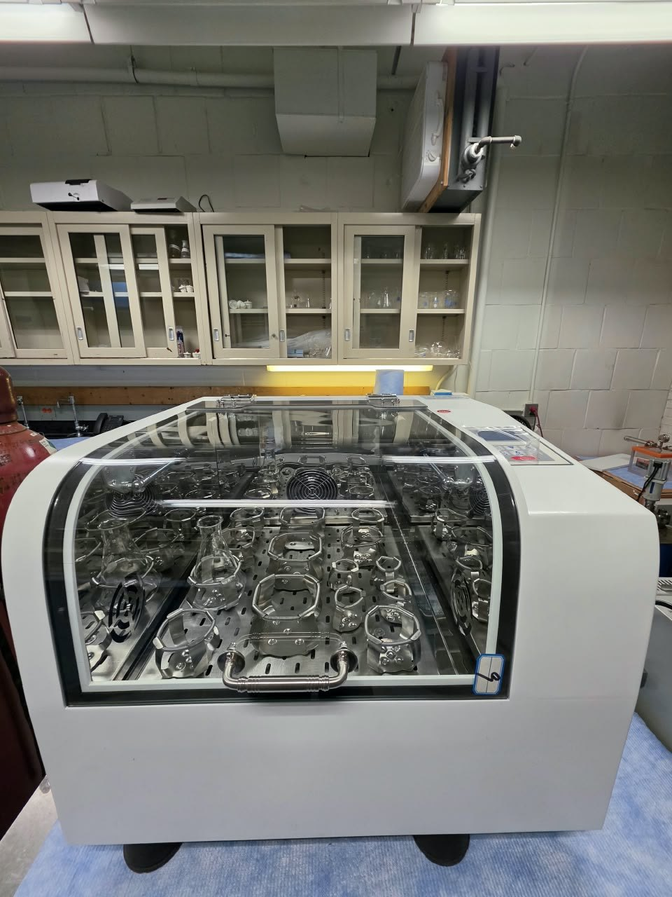
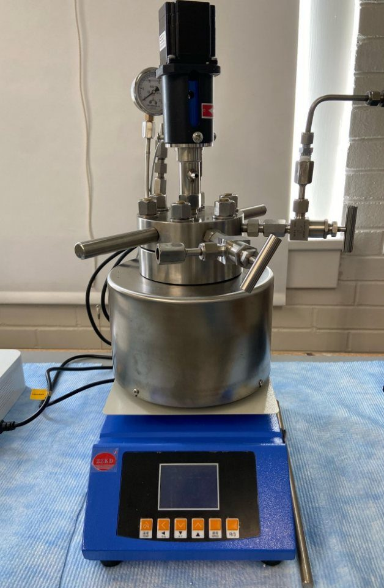
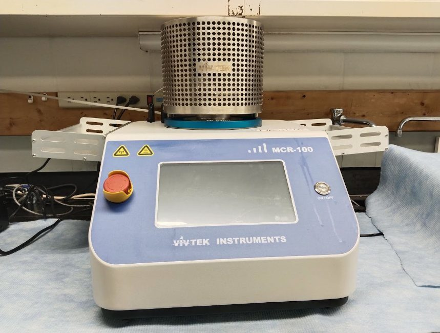
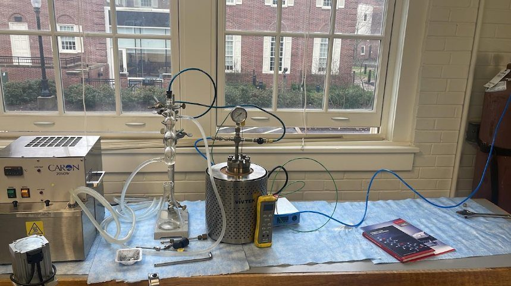
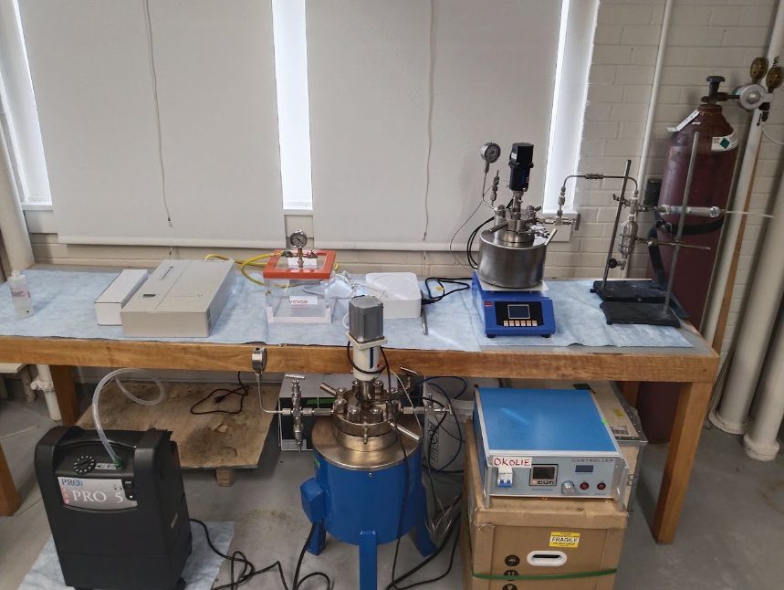
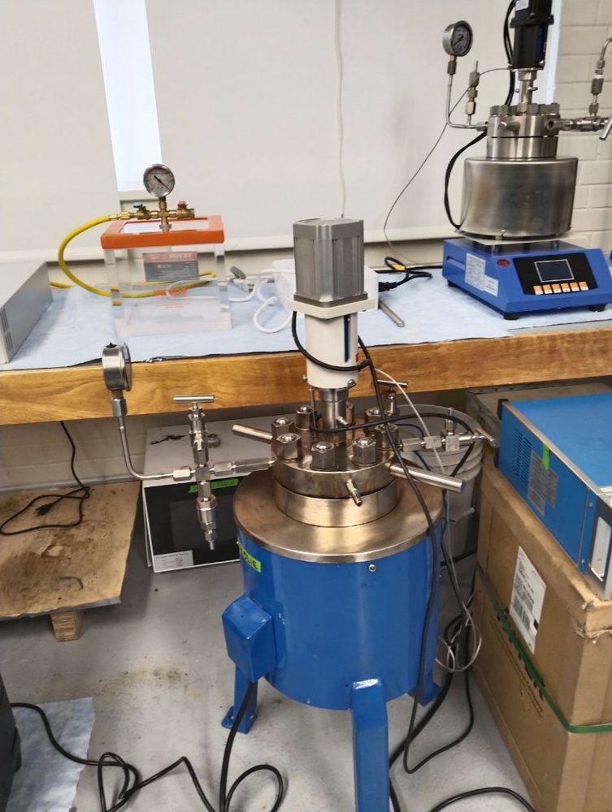

Inside the SETD lab
Reactors and analytical instruments for thermochemical conversion, carbon capture and materials characterization.

High-precision temperature-controlled digital shaker
A high-precision, temperature-controlled digital shaker with a large platform of flask clamps, recently added to the SETD lab.
It provides controlled agitation at a set temperature for many flasks at once, supporting larger-scale synthesis of green solvents for the group's critical metal recovery and battery upcycling research.

Hydrothermal liquefaction (HTL) reactor
A lab-scale hydrothermal liquefaction reactor: an advanced high-pressure, high-temperature system designed to convert wet biomass, plastics, or organic waste into bio-crude oil and valuable chemicals under subcritical or supercritical water conditions.
Operated typically between 250–374 °C and at pressures up to 200 bar, it allows researchers to simulate industrial hydrothermal processes on a laboratory scale, enabling precise control of reaction conditions such as temperature, pressure, residence time, and stirring speed to optimize product yields and study reaction mechanisms. This setup is crucial for sustainable fuel research, waste valorization, and developing carbon-neutral energy pathways.

Chemical looping combustion & in-situ CO₂ capture reactor
Designed for experimental studies on solid-fuel and gas-fuel conversion processes under controlled atmospheres. The horizontal tubular furnace provides uniform heating for the reactor tube, allowing operation at high temperatures (typically 600–1000 °C) to facilitate oxygen carrier redox reactions and CO₂ capture in a single system.
Integrated with precise gas delivery lines, flow meters, and pressure gauges, this setup enables the introduction of reactant gases like methane, syngas, or CO₂ for in-situ capture and conversion, while effluent gases can be analyzed downstream for combustion efficiency and carbon capture performance. It is used for material testing, oxygen carrier cycling stability, and developing low-emission energy systems.

VIVTEK Instruments MCR-100 microwave pyrolysis reactor
A laboratory-scale microwave pyrolysis reactor designed for the thermochemical conversion of biomass, plastics, and other organic feedstocks into bio-oil, syngas, and biochar. Microwave energy provides rapid and uniform heating, which enhances reaction kinetics and energy efficiency compared to conventional heating methods.
Key features: touchscreen interface for precise control of temperature, reaction time, and power settings; high-efficiency microwave cavity and integrated quartz reactor tube for effective heat transfer and process stability; temperature control and monitoring system for consistent, reproducible reaction conditions.

Biomass pyrolysis reactor
Designed to thermochemically convert organic biomass into bio-oil, syngas, and biochar in the absence of oxygen. Operating typically between 400–600 °C, the reactor rapidly heats feedstocks like agricultural waste, wood chips, or algae to decompose their complex polymers (cellulose, hemicellulose, and lignin) into smaller volatile compounds and solid carbonaceous residues.
The setup enables precise control of heating rate, residence time, and carrier gas flow, which are crucial for optimizing product yields and properties.

Micromeritics 3Flex BET surface area & porosity analyzer
A precision instrument for characterizing surface area, pore volume, and pore size distribution of solid materials through gas adsorption. Based on Brunauer-Emmett-Teller (BET) theory, it measures how much gas (commonly nitrogen at liquid nitrogen temperature) physically adsorbs onto a material's surface.
This data is essential for designing and evaluating catalysts, adsorbents for CO₂ capture, battery materials, and porous supports. Its multi-station design allows high-throughput testing and detailed analysis of micro-, meso-, and macroporous structures.

Ozone generator, oxygen concentrator & reaction chamber
Designed for controlled ozone exposure experiments or advanced oxidation processes. The oxygen concentrator ensures a stable, high-purity oxygen feed to the ozone generator, which converts molecular oxygen into ozone using a high-voltage electrical discharge.
The ozone is introduced into a sealed chamber where it interacts with target materials or pollutants for surface modification, sterilization, oxidation of volatile organic compounds (VOCs), or catalyst testing under oxidative environments, with precise control over gas composition and ozone concentration.

UV-Vis spectrophotometer
Measures the absorbance and transmittance of light by liquid or solid samples across the ultraviolet and visible spectrum, typically 200–800 nm, enabling quantification of molecular concentration via the Beer-Lambert law.
Widely applied in material characterization, reaction monitoring, and environmental analysis, it is used to analyze catalysts, adsorbents, and liquid products from processes like CO₂ capture and conversion, offering quick, non-destructive analysis of metal ions, organic compounds, and functional groups.

Boekel Jitterbug™ orbital shaker incubator
A compact benchtop instrument providing controlled shaking and mixing of liquid samples in microplates or small vials, with adjustable speed and temperature.
Uniform orbital agitation supports biochemical reactions, incubation, enzyme kinetics, catalyst suspension preparation, catalyst pre-treatment, adsorption studies, and any process requiring controlled agitation to maintain sample uniformity.
